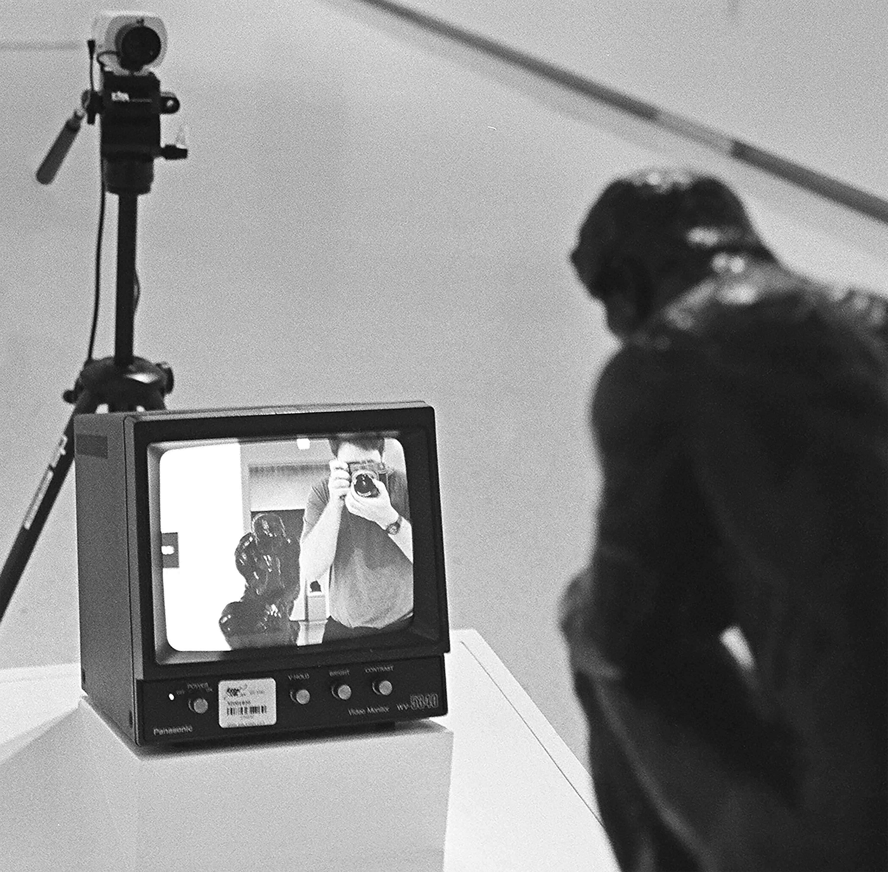

George Gross
Director/Editor/Idiot Savant (sans savant)I began my life long dedication to filmmaking without realizing it, making comedy and skateboarding videos with funny people and ok skateboarders. Since then I’ve split my time between commercial work with many of the most innovative global brands, while pursuing a unique path of independent filmmaking in search of my authentic voice as a filmmaker. My career heroes are Vernon Chatman and Tristram Shapeero.
I recently moved from NY to LA, where I live with my wife Katy and our expectant daughter TBD (Tammy Brenda Danielle).
info@GeorgeGross.com